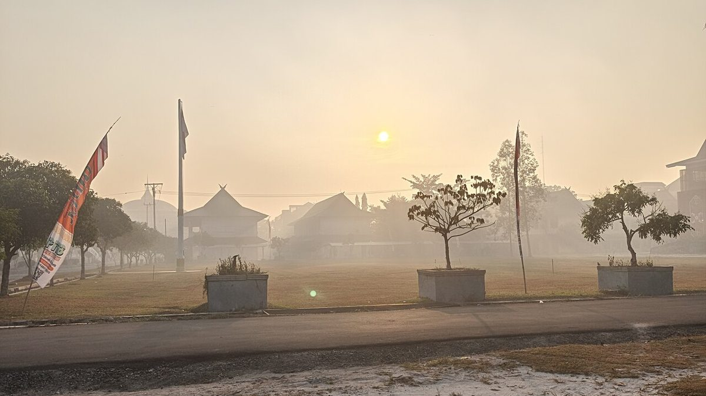

इन्डोनेसियाले पीटभूमिको क्षतिलाई 11 वर्षयताकै सबैभन्दा खराब डढेलो मौसमको कारण बतायो
मध्य कालिमन्तानमा बिहीबार वायु प्रदूषणको मापन झन्डै 1,600 पुग्यो, जुन खतरनाक स्तरभन्दा पाँच गुणा हो, जबकि सरकारले पुराना खाद्य इस्टेट परियोजनाहरूले सुकाएका पीटभूमिहरू पुनर्स्थापना गर्ने वाचा गर्यो।

मुख्य बुँदाहरू
- पूर्वी जाभाको ब्रोमो टेङ्गर सेमेरु राष्ट्रिय निकुञ्जमा डढेलो निभाइरहेका चार जनाको बिहीबार मृत्यु भयो, वन मन्त्रालयले शुक्रबार एक विज्ञप्तिमा भन्यो। अन्य दुई जना गम्भीर रूपमा जलेका छन् र उपचार…
- स्याटेलाइट निगरानीले बिहीबार राति देशभर ७९९ उच्च विश्वसनीय हटस्पट गनेको मन्त्रालयले भन्यो, जुन अघिल्लो दिनभन्दा ४२७ बढी हो। एउटै आगोले धेरै हटस्पट देखाउन सक्छ, त्यसैले यो संख्या छुट्टाछुट्टै आगोको…
- राष्ट्रपति प्राबोवो सुबियान्तोले छिमेकी देशहरूको सहयोग स्वीकार गर्न स्वीकृति दिएको विदेश मन्त्री अरमानाथा नासिरले शुक्रबार बताए। विपद् निकाय BNPB भित्र प्राविधिक छलफल चलिरहेको छ। बिहीबार नियुक्त…
अद्यावधिक 09:35 UTC
पूर्वी जाभाको ब्रोमो टेङ्गर सेमेरु राष्ट्रिय निकुञ्जमा डढेलो निभाइरहेका चार जनाको बिहीबार मृत्यु भयो, वन मन्त्रालयले शुक्रबार एक विज्ञप्तिमा भन्यो। अन्य दुई जना गम्भीर रूपमा जलेका छन् र उपचार पाइरहेका छन्। मन्त्रालयका अनुसार समूह बाक्लो धुवाँ र छिटो फैलिएको आगोमा फसेको थियो। मन्त्रालयले समवेदना व्यक्त गर्यो र आगोको लाइनमा सुरक्षा पहिलो हुनुपर्छ भन्यो, जसमा हावाको दिशा हेर्ने र भाग्ने बाटो खुला राख्ने कुरा पनि छ।
स्याटेलाइट निगरानीले बिहीबार राति देशभर ७९९ उच्च विश्वसनीय हटस्पट गनेको मन्त्रालयले भन्यो, जुन अघिल्लो दिनभन्दा ४२७ बढी हो। एउटै आगोले धेरै हटस्पट देखाउन सक्छ, त्यसैले यो संख्या छुट्टाछुट्टै आगोको गन्ती होइन, तापको मापन हो।
राष्ट्रपति प्राबोवो सुबियान्तोले छिमेकी देशहरूको सहयोग स्वीकार गर्न स्वीकृति दिएको विदेश मन्त्री अरमानाथा नासिरले शुक्रबार बताए। विपद् निकाय BNPB भित्र प्राविधिक छलफल चलिरहेको छ। बिहीबार नियुक्त भएका यसका नयाँ प्रमुखले प्रस्तावहरूको समीक्षा गर्दैछन् र कुनलाई छिटो अघि बढाउन सकिन्छ भनेर निर्णय गर्नेछन्। मलेसियाले गत महिना तीन हेलिकप्टर, एउटा विमान र ५२ जना पठाउने प्रस्ताव गरेको थियो, त्यसयता कुनै प्रगति भएको छैन। सिंगापुरले पनि सहयोग गर्न तयार रहेको बताएको छ।
इन्डोनेसियाको सरकारले बिहीबार पुराना खाद्य इस्टेट परियोजनाहरूले छाडेको क्षतिग्रस्त पीटभूमिलाई देशले 11 वर्षमा देखेको सबैभन्दा खराब डढेलो मौसमको कारण बतायो। एक वरिष्ठ अधिकारीले सुमात्रा र कालिमन्तानमा आगो बलिरहँदा र बाक्लो धुवाँ छिमेकी देशहरूतिर फैलिरहँदा राज्यले पीट पारिस्थितिक प्रणाली पुनर्स्थापना गर्ने बताए।
यसको आकार वायु गुणस्तरका तथ्याङ्कमा स्पष्ट देखिन्छ। मध्य कालिमन्तानको काटिङान जिल्लामा बिहीबार बिहानै प्रदूषण सूचकाङ्क झन्डै 1,600 पुग्यो। प्रान्तीय राजधानी पालाङ्का रायामा यो झन्डै 1,300 पुग्यो। 300 को मापनलाई नै खतरनाक मानिन्छ। यस हप्ता बीबीसीका तस्बिरहरूमा नजिकै डढेलो बलिरहँदा पालाङ्का रायामाथि सुन्तला रङको धुवाँ देखियो, र बासिन्दाहरूले स्थानीय पत्रकारहरूलाई आकाश पहेँलो भएको र दैनिक जीवन निकै सुस्त भएको बताए।
2015 पछिको सबैभन्दा खराब मौसम
अधिकारीहरूका अनुसार यो 2015 पछिको सबैभन्दा तीव्र डढेलो मौसम हो। एल निनोका कारण आएको खडेरीले वन र खेतबारी सुकायो र तिनलाई सजिलै बल्ने बनायो। आगो महिनौँदेखि बलिरहेको छ। सात प्रदेशमा लाखौँ मानिसलाई श्वासप्रश्वाससम्बन्धी रोग लागेको रोयटर्सले जनाएको छ।
धुवाँ सिमानामा रोकिँदैन। पूर्वी टिमोर र मलेसियाका केही राज्यमा विद्यालयहरू बन्द गरिएका छन्। बुधबार पश्चिमी सिङ्गापुरमा एक घण्टाको PM2.5 मापन 284 माइक्रोग्राम प्रति घन मिटर पुग्यो, जुन यस वर्षकै सबैभन्दा उच्च हो, र पूर्वी टिमोरले अक्टोबर 15 देखि तीन दिनका लागि प्रत्यक्ष कक्षा रोक्ने बतायो। राष्ट्रपति प्राबोवो सुबियान्तोले आगो निभाउन थप स्रोत पठाउन आदेश दिएका छन्।
पीटको आगो निभाउन किन यति गाह्रो छ
मध्य कालिमन्तान र दक्षिण सुमात्रा सबैभन्दा बढी प्रभावित क्षेत्र हुन्। तिनका पीटभूमिहरू खाद्य इस्टेट र वृक्षारोपणका लागि बनाइएका नहरहरूले वर्षौँसम्म सुकाइए। सुख्खा पीट सतहमुनि बल्छ। यो देखिँदैन, भित्रभित्रै बलिरहन सक्छ, दिनौँपछि फेरि सल्कन सक्छ र सामान्य वन डढेलोभन्दा बाक्लो धुवाँ निकाल्छ।
उपखाद्य मन्त्री हनिफ फैसोल नुरोफिकले 1990 को दशकको खाद्य इस्टेट परियोजनासहितका ठूला निकास कार्यहरूले पीटलाई नै बदलेको र त्यसको ठूलो भाग नष्ट गरेको बताए। संरक्षण समूह पान्ताउ गाम्बुटको अनुमान छ, वन विनाश र पानीको सतह घटेका कारण इन्डोनेसियाका 24 million hectares पीटभूमिमध्ये 16 million hectares बढी बल्ने सम्भावनायुक्त बनेका छन्। यसको 2024 को अध्ययनले 2015 देखि 2019 बीच आगोले क्षति पुर्याएको पीटभूमिको केवल 3 percent मात्र वनका रूपमा पुनर्स्थापित भएको र 54 percent एकल बाली वृक्षारोपण, मुख्यतः ताडको तेल, बनेको पाएको थियो।
सरकारले के गर्ने भन्छ
हनिफले सरकारले पीटलाई फेरि भिजाउने इनारहरू खन्ने र पानीका नहरहरू राम्रोसँग सञ्चालन गर्ने लक्ष्य राखेको बताए, जुन कामलाई उनले सरल तर वर्षौँसम्म बेवास्ता गरिएको भने। पालाङ्का रायामा बिहीबार दर्जनौँ बासिन्दाले गभर्नरको कार्यालयबाहिर विरोध गरे र बलियो कदम मागे। 46 वर्षीय आदिनाता नामका एक बासिन्दाले रोयटर्सलाई आकाश निकै पहेँलो भएको, मानिसहरू धेरै कम बाहिर निस्किएको र सबैले वर्षाको आशा गरिरहेको बताए।
अन्तमा, यस्तो मौसम सामान्यतया वर्षाले नै अन्त्य गर्छ। वर्षा नआएसम्म, इनार, नहर र अग्नि नियन्त्रक टोलीले पीटलाई जमिन नै बल्न नदिने गरी पर्याप्त भिजाउन सक्छन् कि सक्दैनन् भन्ने नै परीक्षा हुनेछ।
स्रोतहरू
रोयटर्सले अक्टोबर 15 मा सरकारको भनाइ, प्रदूषणका मापनहरू र पुनर्स्थापना योजनाबारे रिपोर्ट गर्यो। रोयटर्सले अक्टोबर 14 मा सिङ्गापुरको मापन, पूर्वी टिमोरमा विद्यालय बन्द र राष्ट्रपतिको आदेशबारे पनि रिपोर्ट गर्यो। बीबीसीले पालाङ्का रायामाथिको सुन्तला धुवाँबारे रिपोर्ट गर्यो, र जावावाले प्रसारित गरेको सीएनएन इन्डोनेसियाको रिपोर्टले शहरका बासिन्दाहरूको अवस्था समेटेको थियो।
समयरेखा
- Oct 14, 2026पश्चिमी सिंगापुरमा एक घण्टाको PM2.5 मापन २८४ माइक्रोग्राम प्रति घन मिटर पुग्यो, जुन यस वर्षको सबैभन्दा उच्च हो, र मध्य कालिमन्तानको प्रदूषण सूचकांक १,२०० नाघ्यो।
- Oct 15, 2026पूर्वी टिमोरमा तीन दिनको प्रत्यक्ष कक्षा स्थगन सुरु भयो। इन्डोनेसियाको सरकारले आगलागीका लागि पिटल्याण्ड क्षयलाई दोष दियो र पुनर्स्थापनाको प्रतिज्ञा गर्यो, काटिङानमा प्रदूषण सूचकांक झण्डै १,६०० र पालाङ्का रायामा झण्डै १,३०० पुग्यो।
- Oct 15, 2026पूर्वी जाभाको ब्रोमो टेङ्गर सेमेरु राष्ट्रिय निकुञ्जमा आगो निभाइरहेका चार जनाको मृत्यु भयो र अन्य दुई जना गम्भीर रूपमा जले। स्याटेलाइट निगरानीले त्यस रात देशभर ७९९ उच्च विश्वसनीय हटस्पट गन्यो, जुन अघिल्लो दिनभन्दा ४२७ बढी हो।
- Oct 16, 2026राष्ट्रपति प्राबोवो सुबियान्तोले आगो निभाउन छिमेकी देशहरूको सहयोग स्वीकार गर्न स्वीकृति दिए, विपद् निकाय BNPB मा प्राविधिक छलफल चलिरहेको छ।
स्रोतहरू
- Reuters: Indonesia blames peatland degradation for raging fires, vows restoration
- Reuters via Y'all 106.7: Singapore pollution spikes, East Timor shuts schools as Indonesia wildfire haze intensifies
- Jawawa (CNN Indonesia reporting): Palangka Raya residents struggle as haze from forest and land fires chokes the city
- Reuters: Indonesia's president ready to accept foreign assistance to combat fires, foreign minister says
- DW: Wildfire kills 4 firefighters in Indonesia's Mount Bromo national park